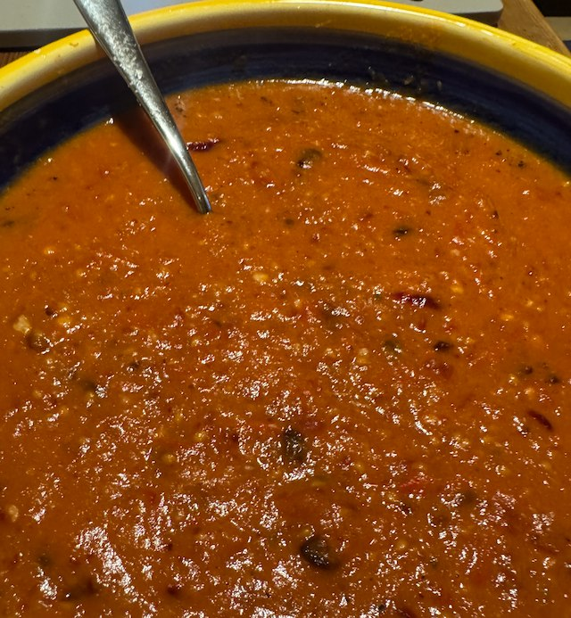

Roasted Salsa

Serves: 4
Cook Time: 30 min
General principals of making salsa by Cook Smarts. This version adapted from frosted tips.
Ingredients
- 6 tomatoes, halved
- 1 red onion, cut to wedges
- 2 green chillies, halved and seeded
- 4 garlic cloves, peeled
- 1 tsp chipotle flakes
- 2 limes, juiced
- salt and pepper.
Method
Heat grill to hot. Put tomatoes, onion, chillies, garlic on a tray and brush with olive oil. Grill for 10-15 min, until the skins char.
Liquidate roasted ingredients with chipotle flakes and lime juice. Taste for salt.